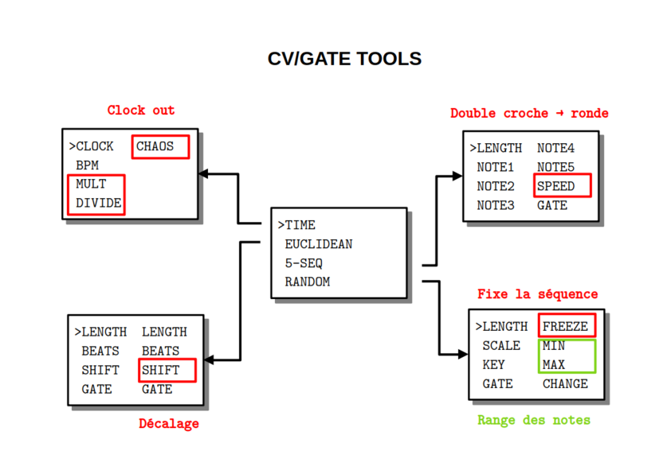

CVGATE_TOOLS

PRÉSENTATION
Ce code permet au module CVGATE TOOLS de générer des CV et GATE suivant certains algorithmes. Il est autonome sur le rack et ne nécessite aucune entrée sauf éventuellement une horloge extérieure.
MODE D’EMPLOI
À la mise sous tension les leds s’allument à tour de rôle puis l’écran affiche pendant quelques secondes un message d’information :
RHYTHM BOX
AND
SEQUENCER
vx.y.z
suivi du numéro de version.
Pour choisir un des algorithmes installés, il faut tourner l’encodeur PARAMETER au-dessus de l’écran.
>TIME
EUCLIDEAN
5-SEQ
RANDOM
Ce même encodeur PARAMETER permet ensuite d’afficher la liste des paramètres par simple pression et de sélectionner le paramètre qu’on souhaite modifier.
CLOCK CHAOS
>BPM
MULT
DIVIDE
Une nouvelle pression permet de revenir à la liste des algorithmes.
Une fois le paramètre sélectionné, l’encodeur VALUE à gauche de l’écran permet d’en modifier la valeur. À noter qu’une rotation d’un seul cran de l’encodeur VALUE affiche la valeur sans la modifier. On modifie la valeur par rotation ou par pression suivant le type de paramètre.
CLOCK CHAOS
> 80
MULT
DIVIDE
Reboot : une pression longue sur l’encodeur PARAMETER affichant la liste redémarre le module.
EUCLIDEAN
Cet algorithme génére deux rythmes euclidiens. Par chaque rythme :
- LENGTH nombre de double croches
- BEATS nombre de pas joués dans la séquence
- SHIFT nombre de double croches de décalage pour la séquence
- GATE durée du signal de 1 à 7 où 8 correspond à la durée de la double-croche
Les valeurs par défaut sont 16, 4, 0 et 2, 4
RANDOM
Cet algorithme génére une séquence aléatoire de notes.
- LENGTH la longueur de séquence en double croches
- FREEZE boucle sur les dernières notes jouées (ON/OFF par pression)
- MIN la plus petite note (incluse) qu’on peut générer
- MAX la plus haute note (exclus) qu’on peut générer
- KEY choix de la tonalité
- SCALE la gamme de la tonalité
- GATE longueur en PPQN (1 / 6 de double croche) de 1 à 5
- CHANGE modifie la séquence gelée par substitution à l’octave/quinte
Les valeurs par défaut sont 0, OFF, C0, C5, C, CHROMA et 4.
Remarques
- les gammes sont la gamme chromatique, majeure, pentatonique majeure, mineure harmonique
- les notes sont prises uniformément dans l’échantillon par exemple pout une pentatonique en C entre C2 et E2, on a une chance sur deux d’avoir C2 ou D2
- si la longueur est nulle alors aucune note n’est générée
- une pression sur MIN ou MAX ramène aux valeurs par défaut
5-SEQ
Cet algorithme est un séquenceur d’au plus 6 pas.
- LENGTH la longueur de la séquence en double croches de 0 à 6
- GATE durée du signal de 1 à 9 où 10 correspond à la durée de la double-croche
- SPEED divise le tempo par 1, 2,…, 16
- NOTE 1 pitch de la note 1
- NOTE 2 pitch de la note 2
- NOTE 3 pitch de la note 3
- NOTE 4 pitch de la note 4
- NOTE 5 pitch de la note 5
Les valeurs par défaut sont 0, 4, 1, C0, C1,…, C4
Remarques
- une pression permet d’activer/désactiver la note
- quand DIVIDE vaut 16 on a une note par mesure
TIME
Cet algorithme gère tout l’aspect lié au temps. Par exemple on peut décider si l’outil envoie un signal d’horloge (24 PPQN) ou pas.
- CLOCK synchronisation sur l’entrée ou pas (EXTERN/INTERN par pression)
- BPM indique le tempo pour l’horloge externe ou règle de tempo pour l’horloge interne entre 30 et 240 bpm
- MULT multiplie le tempo par 1, 2, 3 ou 4 permettant de générer un effet stutter
- DIVIDE divise le tempo par 1, 2, 3 ou 4
- CHAOS de 0 (aucun trigger) à 10 (tous les triggers). C’est une sortie aléatoire
Les valeurs par défaut sont INTERN, 120, 1 et 1.
Remarques
- le bpm affiché est entier ce qui signifie qu’il est arrondis pour un signal entrant et qu’il n’est pas possible de lui donner une valeur décimale lorsqu’il est généré
DONNÉES TECHNIQUES
Alimentation :
- Bus Eurorack : +12v 40mA
Dimensions :
- largeur : 12HP
- profondeur : 27mm
Librairies :
- SPI 1.0
- Versatile_RotaryEncoder 1.3.1
- U8g2 2.35.30
- Wire 1.0
Plateforme :
- thinary:avr 1.0.0